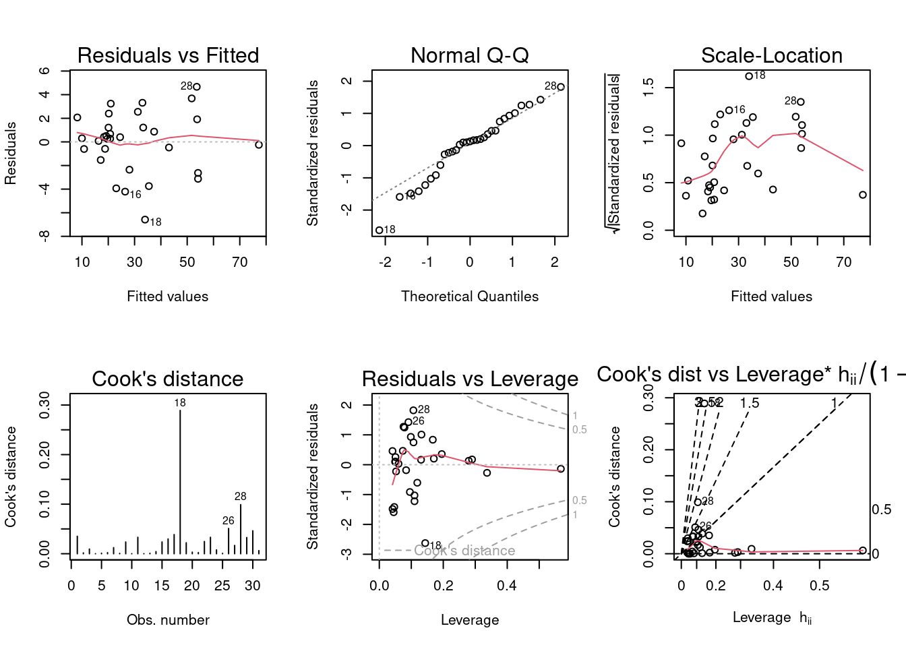
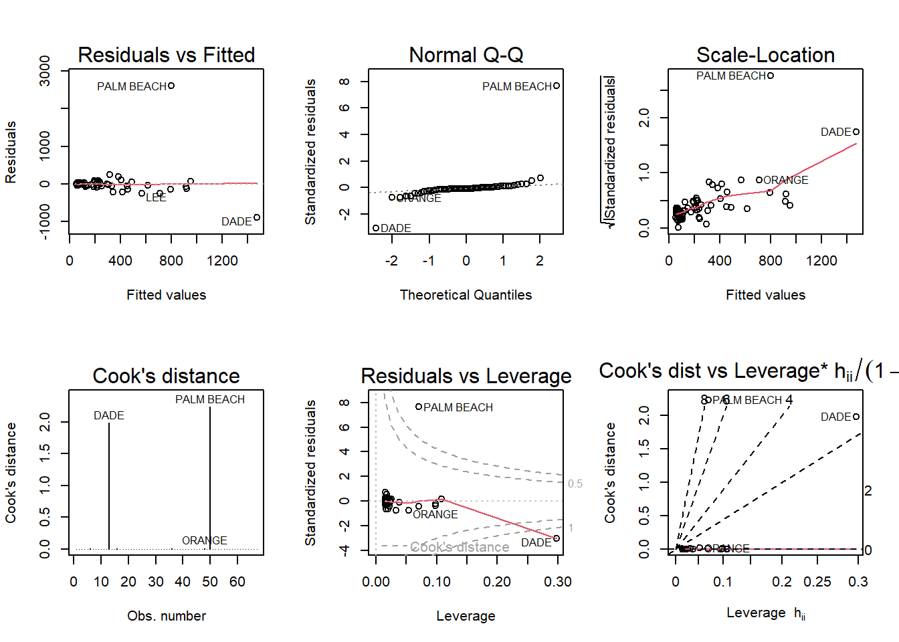

Code
library(tidyverse)
library(dplyr)
library(ggplot2)
library(alr4)
library(smss)
knitr::opts_chunk$set(echo = TRUE)library(tidyverse)
library(dplyr)
library(ggplot2)
library(alr4)
library(smss)
knitr::opts_chunk$set(echo = TRUE)data("house.selling.price.2") #load housing data
summary(lm(P ~ ., data = house.selling.price.2))
Call:
lm(formula = P ~ ., data = house.selling.price.2)
Residuals:
Min 1Q Median 3Q Max
-36.212 -9.546 1.277 9.406 71.953
Coefficients:
Estimate Std. Error t value Pr(>|t|)
(Intercept) -41.795 12.104 -3.453 0.000855 ***
S 64.761 5.630 11.504 < 2e-16 ***
Be -2.766 3.960 -0.698 0.486763
Ba 19.203 5.650 3.399 0.001019 **
New 18.984 3.873 4.902 4.3e-06 ***
---
Signif. codes: 0 '***' 0.001 '**' 0.01 '*' 0.05 '.' 0.1 ' ' 1
Residual standard error: 16.36 on 88 degrees of freedom
Multiple R-squared: 0.8689, Adjusted R-squared: 0.8629
F-statistic: 145.8 on 4 and 88 DF, p-value: < 2.2e-16For backward elimination, the first variable that should be deleted is Beds as it has the largest p-value in the regression model at 0.486763.
For forward selection, the first variable that should be added is New since it has the lowest p-value at 4.3e-06.
The BEDS variable could have a large p-value and high correlation because it no longer becomes significant compared to the other variables are added.
#model 1
house_model1 <-lm(P ~ New, data = house.selling.price.2)
summary(house_model1)
Call:
lm(formula = P ~ New, data = house.selling.price.2)
Residuals:
Min 1Q Median 3Q Max
-71.749 -21.249 -7.449 17.251 190.751
Coefficients:
Estimate Std. Error t value Pr(>|t|)
(Intercept) 89.249 5.148 17.336 < 2e-16 ***
New 34.158 9.383 3.641 0.000451 ***
---
Signif. codes: 0 '***' 0.001 '**' 0.01 '*' 0.05 '.' 0.1 ' ' 1
Residual standard error: 41.51 on 91 degrees of freedom
Multiple R-squared: 0.1271, Adjusted R-squared: 0.1175
F-statistic: 13.25 on 1 and 91 DF, p-value: 0.0004515#model 2
house_model2 <-lm(P ~ S, data = house.selling.price.2)
summary(house_model2)
Call:
lm(formula = P ~ S, data = house.selling.price.2)
Residuals:
Min 1Q Median 3Q Max
-56.407 -10.656 2.126 11.412 85.091
Coefficients:
Estimate Std. Error t value Pr(>|t|)
(Intercept) -25.194 6.688 -3.767 0.000293 ***
S 75.607 3.865 19.561 < 2e-16 ***
---
Signif. codes: 0 '***' 0.001 '**' 0.01 '*' 0.05 '.' 0.1 ' ' 1
Residual standard error: 19.47 on 91 degrees of freedom
Multiple R-squared: 0.8079, Adjusted R-squared: 0.8058
F-statistic: 382.6 on 1 and 91 DF, p-value: < 2.2e-16#model 3
house_model3 <-lm(P ~ Ba, data = house.selling.price.2)
summary(house_model3)
Call:
lm(formula = P ~ Ba, data = house.selling.price.2)
Residuals:
Min 1Q Median 3Q Max
-52.903 -21.003 -2.703 12.197 130.571
Coefficients:
Estimate Std. Error t value Pr(>|t|)
(Intercept) -49.248 15.644 -3.148 0.00222 **
Ba 76.026 7.822 9.720 9.84e-16 ***
---
Signif. codes: 0 '***' 0.001 '**' 0.01 '*' 0.05 '.' 0.1 ' ' 1
Residual standard error: 31.12 on 91 degrees of freedom
Multiple R-squared: 0.5094, Adjusted R-squared: 0.504
F-statistic: 94.47 on 1 and 91 DF, p-value: 9.839e-16#model 4
house_model4 <-lm(P ~ Be, data = house.selling.price.2)
summary(house_model4)
Call:
lm(formula = P ~ Be, data = house.selling.price.2)
Residuals:
Min 1Q Median 3Q Max
-72.079 -19.679 -3.779 14.352 174.752
Coefficients:
Estimate Std. Error t value Pr(>|t|)
(Intercept) -37.23 19.95 -1.866 0.0653 .
Be 42.97 6.16 6.976 4.76e-10 ***
---
Signif. codes: 0 '***' 0.001 '**' 0.01 '*' 0.05 '.' 0.1 ' ' 1
Residual standard error: 35.86 on 91 degrees of freedom
Multiple R-squared: 0.3484, Adjusted R-squared: 0.3413
F-statistic: 48.66 on 1 and 91 DF, p-value: 4.759e-10#summary of AIC comparisons
house.selling.price.2%>%
summarise(AIC(house_model1), AIC(house_model2), AIC(house_model3), AIC(house_model4)) AIC(house_model1) AIC(house_model2) AIC(house_model3) AIC(house_model4)
1 960.908 820.1439 907.3327 933.7168#summary of BIC comparisons
house.selling.price.2%>%
summarise(BIC(house_model1), BIC(house_model2), BIC(house_model3), BIC(house_model4)) BIC(house_model1) BIC(house_model2) BIC(house_model3) BIC(house_model4)
1 968.5058 827.7417 914.9305 941.3146Using software with these four predictors, find the model that would be selected using each criterion: a. R2 - Model2 with the Size variable would be the best with the highest R-squared value of 0.8079. b. Adjusted R2 - Model2 would be the best fit with the highest value at 0.8058. c. PRESS - Model2 is the best fit. d. AIC - Model2 with the Size would be the best with an AIC of 820.1439. e. BIC - Model2 with the Size would be the best with an BIC of 827.74.
The model using the Size variable resulted in the best fit model.
data("trees")tree_model1 <-lm(Volume ~ Girth + Height, trees)
summary(tree_model1)
Call:
lm(formula = Volume ~ Girth + Height, data = trees)
Residuals:
Min 1Q Median 3Q Max
-6.4065 -2.6493 -0.2876 2.2003 8.4847
Coefficients:
Estimate Std. Error t value Pr(>|t|)
(Intercept) -57.9877 8.6382 -6.713 2.75e-07 ***
Girth 4.7082 0.2643 17.816 < 2e-16 ***
Height 0.3393 0.1302 2.607 0.0145 *
---
Signif. codes: 0 '***' 0.001 '**' 0.01 '*' 0.05 '.' 0.1 ' ' 1
Residual standard error: 3.882 on 28 degrees of freedom
Multiple R-squared: 0.948, Adjusted R-squared: 0.9442
F-statistic: 255 on 2 and 28 DF, p-value: < 2.2e-16tree_model2 <- lm(Volume ~ Girth * Height, trees)
summary(tree_model2)
Call:
lm(formula = Volume ~ Girth * Height, data = trees)
Residuals:
Min 1Q Median 3Q Max
-6.5821 -1.0673 0.3026 1.5641 4.6649
Coefficients:
Estimate Std. Error t value Pr(>|t|)
(Intercept) 69.39632 23.83575 2.911 0.00713 **
Girth -5.85585 1.92134 -3.048 0.00511 **
Height -1.29708 0.30984 -4.186 0.00027 ***
Girth:Height 0.13465 0.02438 5.524 7.48e-06 ***
---
Signif. codes: 0 '***' 0.001 '**' 0.01 '*' 0.05 '.' 0.1 ' ' 1
Residual standard error: 2.709 on 27 degrees of freedom
Multiple R-squared: 0.9756, Adjusted R-squared: 0.9728
F-statistic: 359.3 on 3 and 27 DF, p-value: < 2.2e-16The best fit model to predict tree volume includes girth plus height as an interaction term. This is displayed in tree_model2.
#create matrix of model plots
par(mfrow = c(2,3)); plot(tree_model2, which = 1:6)
A few assumptions that may be violated include:
- Potential heteroskedasticity as suggested in the curved red line in the Scale-Location plot suggesting standardized residuals may be changing as a product of fitting.
- Observation #18 has significant leverage compared to the observation’s (see Cook’s distance) and may indicate a larger potential influence on the model.
data("florida") #load dataRun a simple linear regression model where the Buchanan vote is the outcome and the Bush vote is the explanatory variable. Produce the regression diagnostic plots.
fla_model <- (lm(Buchanan ~ Bush, data=florida))
summary(fla_model)
Call:
lm(formula = Buchanan ~ Bush, data = florida)
Residuals:
Min 1Q Median 3Q Max
-907.50 -46.10 -29.19 12.26 2610.19
Coefficients:
Estimate Std. Error t value Pr(>|t|)
(Intercept) 4.529e+01 5.448e+01 0.831 0.409
Bush 4.917e-03 7.644e-04 6.432 1.73e-08 ***
---
Signif. codes: 0 '***' 0.001 '**' 0.01 '*' 0.05 '.' 0.1 ' ' 1
Residual standard error: 353.9 on 65 degrees of freedom
Multiple R-squared: 0.3889, Adjusted R-squared: 0.3795
F-statistic: 41.37 on 1 and 65 DF, p-value: 1.727e-08par(mfrow = c(2,3)); plot(fla_model, which = 1:6)
Palm Beach County is an outlier. This may be due to this county having the most Buchanan votes (3404).
fla_model2 <- (lm(log(Buchanan) ~ log(Bush), data=florida))
summary(fla_model2)
Call:
lm(formula = log(Buchanan) ~ log(Bush), data = florida)
Residuals:
Min 1Q Median 3Q Max
-0.96075 -0.25949 0.01282 0.23826 1.66564
Coefficients:
Estimate Std. Error t value Pr(>|t|)
(Intercept) -2.57712 0.38919 -6.622 8.04e-09 ***
log(Bush) 0.75772 0.03936 19.251 < 2e-16 ***
---
Signif. codes: 0 '***' 0.001 '**' 0.01 '*' 0.05 '.' 0.1 ' ' 1
Residual standard error: 0.4673 on 65 degrees of freedom
Multiple R-squared: 0.8508, Adjusted R-squared: 0.8485
F-statistic: 370.6 on 1 and 65 DF, p-value: < 2.2e-16par(mfrow = c(2,3)); plot(fla_model2, which = 1:6)
Palm Beach County, remains as the most prominent outlier. However, the second model highlights a second tier of outliers including Glades and Liberty.